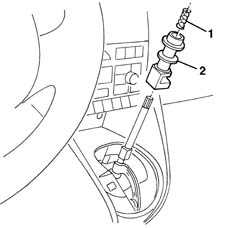

2125C18 reverse inhibitor - replace
- Path
- Procedures > 21 GEARBOX > 2125 MANUAL GEARBOX EXTERNAL CONTROLS > 2125C manual gearbox external control (cables) > 2125C18 reverse inhibitor - replace
- Kind
- repair procedure (removal / refitting; the operation number is the code)
- Applies to
- engines: 1.2 8v, 1.2 16v, 1.4 16v; all production periods
- Interactive page
- https://sloeber94.github.io/elrnDB-lYpsln/en/#/2429125
Applies to: engines: 1.2 8v, 1.2 16v, 1.4 16v; all production periods
 Removing
Removing
 Refitting
Refitting2125A30 lever/knob cover - r + r
2125C24 gear lever knob - r + r
1. Extract the spring.
2. Extract the reverse gear inhibitor.

Applies to: engines: 1.2 8v, 1.2 16v, 1.4 16v; all production periods
Refitting
RemovingCheck that the device is not damaged.
1. Place the reverse gear inhibitor in position and fit the spring.